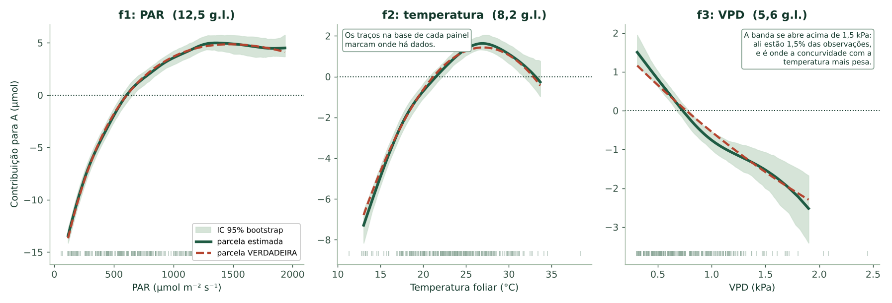
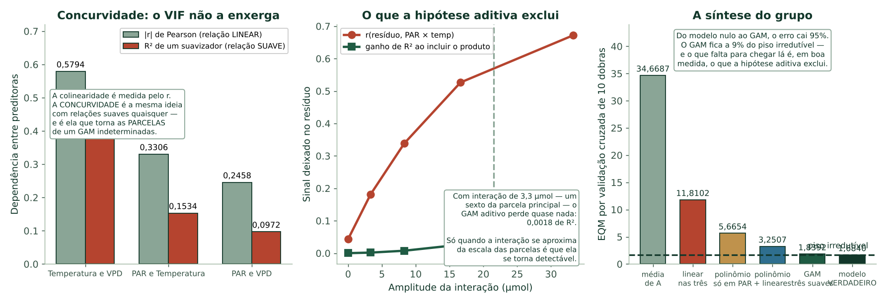

Modelos aditivos generalizados (GAM)
Soma uma função suave por preditora — a estrutura que torna a flexibilidade possível com várias variáveis, ao preço de excluir interações.
Comece por aqui
As quatro fichas anteriores trataram uma preditora de cada vez. Esta junta as três, mantendo a flexibilidade de cada uma. O preço é uma hipótese: a de que os efeitos se somam.
Com três preditoras e flexibilidade de 10 graus de liberdade em cada, o modelo aditivo tem cerca de 30 parâmetros. Uma superfície totalmente flexível em três dimensões, com a mesma resolução, teria \(10^3=1\,000\). Com \(n=260\), o primeiro é estimável e o segundo não é. A aditividade é o que torna o problema possível, e é por isso que ela vale a pena mesmo sabendo que é falsa — porque toda hipótese de modelagem é falsa, e a pergunta é quanto custa.
O que é um modelo aditivo
Cada preditora entra com uma função própria, estimada dos dados, e as contribuições se somam. É a generalização direta do modelo linear — nele, cada \(f_j\) é obrigada a ser uma reta — e a redução direta do modelo totalmente flexível, que permitiria qualquer superfície.

| Modelo | Forma de cada efeito | Interações | Parâmetros (3 preditoras, 10 g.l.) |
|---|---|---|---|
| Linear | reta | não | 4 |
| Linear com produtos | reta | lineares | 7 |
| Aditivo (GAM) | qualquer função suave | não | ≈ 30 |
| GAM com um termo tensorial | suave | uma, suave | ≈ 120 |
| Totalmente flexível | qualquer superfície | todas | ≈ 1 000 |
Pressupostos e como verificá-los
| Pressuposto | Por que importa | Como verificar |
|---|---|---|
| Aditividade | É a hipótese central. | Resíduo contra produtos; compare com te(x1, x2). |
| Cada parcela centrada | Sem isso o intercepto não é identificável. | Automático; verifique que as médias são zero. |
| Erros independentes | A escolha da suavidade supõe isso. | Com séries ou grupos, use gamm. |
| Variância constante (ou família certa) | O "G" permite outras famílias. | gam.check; escolha family. |
| k suficiente em cada s() | k limita a flexibilidade da base. | gam.check avisa se o edf encosta em k−1. |
| Suavidade estimada, não arbitrada | REML ou GCV; não escolha a olho. | method = "REML" é o recomendado. |
| Concurvidade examinada | Preditoras ligadas por relação suave. | concurvity(m); o VIF não a enxerga. |
| Dados em toda a faixa de cada preditora | A banda se abre onde faltam. | Traços de dados (rug) no gráfico de cada parcela. |
Duas preditoras colineares tornam os coeficientes indeterminados. Duas preditoras ligadas por uma relação suave qualquer tornam as parcelas indeterminadas — e isso não aparece no fator de inflação de variância, que só mede associação linear. Nestes dados, a temperatura e o VPD têm \(r=0{,}5794\), o que não assusta; mas um suavizador da temperatura explica 44,8% da variação do VPD, porque a relação física entre os dois é exponencial. É esse o número que importa, e a função concurvity() do mgcv o calcula.
Formulação e cálculo
Em que:
- \(g\)
- função de ligação: identidade, logito, logaritmo
- \(f_j\)
- função suave da \(j\)-ésima preditora
- \(\alpha\)
- intercepto
- \(\mathbb{E}[f_j]=0\)
- a restrição de identificabilidade
A restrição de média zero é necessária: sem ela, somar uma constante a \(f_1\) e subtraí-la de \(f_2\) daria o mesmo ajuste, e nem o intercepto nem as parcelas seriam identificáveis. Verificado numericamente: após convergir, as três parcelas têm média \(0{,}0000000000\) e o intercepto vale 14,1245, exatamente a média de \(A\).
O retroajuste (backfitting)
Com \(\hat\alpha=\bar y\) e todas as parcelas inicializadas em zero, repete-se até convergir:
Em que:
- \(S_j\)
- o suavizador da \(j\)-ésima preditora (spline, LOESS, o que for)
- \(y-\hat\alpha-\sum_{k\neq j}\hat f_k\)
- o resíduo PARCIAL: o que sobra para \(f_j\) explicar
É o algoritmo de Hastie e Tibshirani (1986), e a elegância dele está em que qualquer suavizador univariado serve. O mgcv de Wood usa outro caminho — representa todas as parcelas em bases penalizadas e resolve o sistema conjunto, estimando as penalidades por REML — que é mais rápido e permite inferência melhor, mas o retroajuste é o que torna a ideia transparente.
Exemplo numérico, passo a passo
| Rodada | Maior mudança em uma parcela | SQR |
|---|---|---|
| 1 | 1,885 × 10¹ | 446,0718 |
| 2 | 2,160 | 379,0075 |
| 3 | 3,765 × 10⁻¹ | 371,5735 |
| 5 | 3,109 × 10⁻¹ | 369,6566 |
| 8 | 2,546 × 10⁻¹ | 369,4501 |
| 12 | 1,994 × 10⁻¹ | 369,4090 |
| 20 | 1,203 × 10⁻¹ | 369,4173 |
| 30 | 6,391 × 10⁻² | 369,4618 |
| 40 | 3,395 × 10⁻² | 369,4984 |
A soma de quadrados estabiliza depressa: da rodada 3 em diante ela muda na terceira casa decimal. As parcelas, porém, continuam se ajustando por muito mais tempo — a mudança máxima cai de 18,85 na primeira rodada para 0,034 na quadragésima, e ainda não é zero.
A razão é exatamente a concurvidade. A parte da variação que a temperatura e o VPD compartilham pode ser atribuída a qualquer um dos dois sem alterar o ajuste total, e o retroajuste a redistribui lentamente entre eles. O critério global não sente, porque a soma não muda; as parcelas individuais sentem.
A consequência prática: quando se quer o ajuste, bastam poucas rodadas; quando se quer interpretar as parcelas, convém rodar até a convergência estrita e verificar se as parcelas estão estáveis. É uma versão do mesmo aviso que aparece na ficha ridge — a colinearidade não impede predizer, impede identificar.
Propriedades
- Cada parcela é identificável só a menos de uma constante: daí a restrição de média zero.
- Com todas as \(f_j\) lineares, recupera-se o modelo linear.
- O retroajuste aceita qualquer suavizador univariado.
- Os graus de liberdade totais são a soma dos de cada parcela, mais 1.
- Não representa interações: elas sobram no resíduo.
- Escala bem com o número de preditoras: \(p\) parcelas, não \(10^{p}\) células.
- O "G" permite famílias não normais, com a mesma estrutura de ligação do GLM.
- A concurvidade é a colinearidade da versão suave, e exige verificação própria.
Como interpretar os resultados
| Elemento | O que informa | Cuidado |
|---|---|---|
| Gráfico de cada parcela | A forma do efeito daquela preditora. | É o resultado principal; publique os três. |
| edf | Graus de liberdade efetivos da parcela. | edf ≈ 1 significa efeito LINEAR. |
| Teste F de cada termo suave | Se a parcela difere de zero. | Aproximado; supõe a suavidade estimada corretamente. |
| R² ajustado e deviance explicada | Ajuste global. | Resubstituição: otimista. |
gam.check | Se k é suficiente e os resíduos se comportam. | Rode sempre. |
concurvity | Dependência suave entre preditoras. | O VIF não serve aqui. |
| Banda de confiança | A incerteza da forma. | Abre onde faltam dados; olhe os traços. |
| Intercepto | A média da resposta. | As parcelas são desvios em torno dele. |
O que o edf diz
O número de graus de liberdade efetivos de cada parcela é a informação mais útil da saída, porque responde diretamente à pergunta "esta preditora precisa de uma curva?". Um edf próximo de 1 significa que o suavizador decidiu que uma reta basta — e nesse caso convém substituir o termo suave por um termo linear, que é mais simples e dá inferência usual. Nos dados desta ficha, os edf são 12,53 para o PAR, 8,22 para a temperatura e 5,60 para o VPD: as três precisam de curvatura, e o PAR precisa de bastante.
No mgcv, o argumento k de s(x, k = …) não é o número de graus de liberdade usados: é o máximo que a base permite. A suavidade efetiva é escolhida pela penalidade, e normalmente fica bem abaixo de \(k\). Mas se o edf estimado encostar em \(k-1\), a base está limitando o ajuste, e o resultado é um efeito artificialmente suavizado. O gam.check testa exatamente isso e avisa; a resposta é aumentar \(k\) e reajustar. É o erro mais comum de quem começa a usar o pacote.
Como executar no R e em Python
Onde executar o código em Python
Não é preciso instalar nada: o Google Colab é um computador na nuvem, gratuito, que executa Python pelo navegador e já traz as bibliotecas usadas aqui (numpy, scipy e matplotlib).
Há dois pacotes, com filosofias diferentes. O mgcv, de Simon Wood, é o padrão atual: gam(A ~ s(par) + s(temp) + s(vpd), data = fot, method = "REML") ajusta tudo e estima a suavidade sozinho, por REML — que é o método recomendado, mais estável que o GCV. O summary traz, para cada termo suave, o edf e um teste F aproximado; plot(m, pages = 1, shade = TRUE) desenha as parcelas com banda; gam.check(m) faz o diagnóstico e avisa se algum \(k\) está apertado. Para interações, te(x1, x2) (produto tensorial, para variáveis de unidades diferentes) ou s(x1, x2) (thin plate, para variáveis na mesma escala). Para outras famílias, family = binomial, poisson, e assim por diante. Para erros correlacionados ou efeitos aleatórios, gamm.
O gam, de Trevor Hastie, implementa o retroajuste clássico e exige que o usuário dê os graus de liberdade: s(par, df = 12). É mais transparente para entender o algoritmo e aceita lo() para usar LOESS como suavizador. Os dois pacotes definem uma função chamada gam, de modo que convém chamá-las com mgcv::gam e gam::gam quando os dois estiverem carregados.
library(mgcv)
m <- gam(A ~ s(par) + s(temp) + s(vpd), data = fot, method = "REML")
summary(m) # edf de cada parcela, e os testes F
plot(m, pages = 1, shade = TRUE, residuals = TRUE)
gam.check(m) # k é suficiente?
concurvity(m, full = FALSE)
Exemplo de aplicação
Contexto dos dados
Os dados são fictícios e foram criados pelo autor: 260 medições de trocas gasosas em folhas de cafeeiro. A resposta é a fotossíntese líquida \(A\) (μmol CO₂ m⁻² s⁻¹) e as três preditoras são a radiação PAR (μmol m⁻² s⁻¹, de 57 a 1.998), a temperatura foliar (°C, de 11,3 a 38,3) e o déficit de pressão de vapor VPD (kPa, de 0,30 a 2,45). O processo gerador é conhecido: \[\begin{aligned}A &= \alpha+f_1(\text{PAR})+f_2(\text{temp}) \\ &\quad +f_3(\text{VPD})+\varepsilon,\end{aligned}\] com erro de desvio-padrão 1,30. A curva de luz \(f_1\) sobe depressa, satura e cai um pouco por fotoinibição acima de 1.000 μmol; \(f_2\) tem ótimo em 27 °C; \(f_3\) é um declínio convexo. Saber as funções verdadeiras permite medir o viés de cada método — o que, em dados reais, nunca é possível. O mesmo conjunto atravessa as cinco fichas do grupo.
Código em R
# Modelos aditivos generalizados (GAM): exemplo completo ----
# Pacotes: mgcv (Simon Wood) e gam (Trevor Hastie)
# Dados fictícios: 260 medições de trocas gasosas em folhas de cafeeiro.
# O arquivo fotossintese.csv acompanha o site, na pasta scripts/.
fot <- read.csv("fotossintese.csv")
str(fot) # A (umol CO2 m-2 s-1), par, temp, vpd
summary(fot)
plot(A ~ par, data = fot, pch = 16, col = "#8aa59680",
xlab = "PAR (umol m-2 s-1)", ylab = "A (umol CO2 m-2 s-1)")
# O ponto de partida: quanto o modelo LINEAR deixa na mesa
summary(lm(A ~ par + temp + vpd, data = fot))$r.squared # 0,6747
# O processo gerador verdadeiro daria R² = 0,9514. É esse buraco que o
# grupo inteiro de fichas tenta preencher.
# ---- 1. O ponto de partida: quanto o modelo linear deixa na mesa
m_lin <- lm(A ~ par + temp + vpd, data = fot)
summary(m_lin)$r.squared # 0,6747
# ---- 2. O GAM
library(mgcv)
m <- gam(A ~ s(par) + s(temp) + s(vpd), data = fot, method = "REML")
summary(m)
# A tabela de termos suaves traz, para cada parcela, os graus de
# liberdade efetivos (edf) e um teste F aproximado.
plot(m, pages = 1, shade = TRUE, seWithMean = TRUE, residuals = TRUE)
gam.check(m) # diagnostico: k suficiente? residuos bem comportados?
# O mgcv escolhe a suavidade SOZINHO, por REML ou GCV. O argumento k de
# s() e o numero MAXIMO de graus de liberdade da base, nao o usado:
m2 <- gam(A ~ s(par, k = 20) + s(temp, k = 20) + s(vpd, k = 20),
data = fot, method = "REML")
cbind(k10 = summary(m)$edf, k20 = summary(m2)$edf)
# Se o edf encostar em k-1, aumente k. E o que gam.check verifica.
# ---- 3. O retroajuste, no pacote gam de Hastie
library(gam)
mh <- gam::gam(A ~ s(par, df = 12) + s(temp, df = 8) + s(vpd, df = 6),
data = fot)
summary(mh)
# Aqui os g.l. sao DADOS pelo usuario; no mgcv sao estimados.
# ---- 4. COMPARAÇÃO com os modelos mais simples
AIC(m_lin, m)
anova(m_lin, m, test = "F")
# E por validacao cruzada, que e o criterio honesto:
set.seed(1)
d <- sample(rep(1:10, length.out = nrow(fot)))
er_l <- er_g <- numeric(nrow(fot))
for (j in 1:10) {
tr <- fot[d != j, ]; te <- fot[d == j, ]
er_l[d == j] <- te$A - predict(lm(A ~ par + temp + vpd, data = tr), newdata = te)
er_g[d == j] <- te$A - predict(gam(A ~ s(par) + s(temp) + s(vpd),
data = tr, method = "REML"), newdata = te) }
c(linear = mean(er_l^2), gam = mean(er_g^2))
# ---- 5. CONCURVIDADE: a colinearidade dos modelos aditivos
concurvity(m, full = TRUE)
concurvity(m, full = FALSE) # par a par
# O VIF so enxerga relacoes LINEARES. A concurvidade mede o quanto uma
# parcela pode ser aproximada pelas outras, por qualquer funcao suave.
cor(fot$temp, fot$vpd) # 0,5794
summary(gam(vpd ~ s(temp), data = fot))$r.sq # 0,4482
# ---- 6. O QUE A HIPÓTESE ADITIVA EXCLUI: interações
# Um termo de interacao suave em duas dimensoes:
mi <- gam(A ~ te(par, temp) + s(vpd), data = fot, method = "REML")
AIC(m, mi)
anova(m, mi, test = "F")
# Diagnostico barato: o residuo do GAM aditivo guarda estrutura?
res <- residuals(m)
cor(res, (fot$par - mean(fot$par))*(fot$temp - mean(fot$temp)))
# ---- 7. Para outras famílias
# O "G" de GAM e de generalizado: a mesma estrutura vale para resposta
# binaria, de contagem, etc.
# gam(doente ~ s(idade) + s(dose), family = binomial, data = d)
# gam(n_insetos ~ s(temp) + s(umidade), family = poisson, data = d)
A mesma análise em Python, com os resultados
Cole o código em um notebook do Google Colab ↗ e execute com Shift+Enter. Os valores abaixo são a saída desse código.
import numpy as np
# ------------------------------------------------------------------
# Bloco comum às fichas deste grupo: funções auxiliares e dados (cab15)
# ------------------------------------------------------------------
import numpy as np
# ------------------------------------------------------------------
# Bloco comum às fichas deste grupo: funções auxiliares e dados (dados15)
# ------------------------------------------------------------------
import numpy as np
import pandas as pd
def le_csv(nome):
"""Lê o arquivo de dados da ficha: primeiro na pasta atual; se não
estiver lá (por exemplo, no Google Colab), direto do site."""
try:
return pd.read_csv(nome)
except FileNotFoundError:
return pd.read_csv('https://cassiushenrique.github.io/ModelosEstatisticos/scripts/' + nome)
# Dados fictícios: 260 medições de trocas gasosas (arquivo fotossintese.csv)
fot = le_csv('fotossintese.csv')
PAR=fot['par'].to_numpy(float); TEMP=fot['temp'].to_numpy(float)
VPD=fot['vpd'].to_numpy(float); A=fot['A'].to_numpy(float)
NG=len(A)
SIG=1.30
INT=14.0
def f_par(x):
x=np.asarray(x,float)
return 26.0*(1-np.exp(-0.0024*x))-1.9e-6*np.maximum(x-1000,0)**2
def f_temp(t): t=np.asarray(t,float); return -0.042*(t-27.0)**2
def f_vpd(v): v=np.asarray(v,float); return -2.9*v+0.33*v**2
C1=19.9605909253; C2=-1.4311050277; C3=-2.0245067433
def verdade(x,t,v): return INT+(f_par(x)-C1)+(f_temp(t)-C2)+(f_vpd(v)-C3)
# ------------------------------------------------------------------ fim do bloco comum
# ------------------------------------------------------------------ utilidades
def c(v, d=4): return ('%.*f' % (d, v)).replace('.', ',')
def eqm(o, p): return float(np.mean((np.asarray(o) - np.asarray(p))**2))
def sqr(o, p): return float(np.sum((np.asarray(o) - np.asarray(p))**2))
def r2(o, p): return 1 - sqr(o, p)/float(np.sum((np.asarray(o) - np.mean(o))**2))
def dobras(n, k, seed):
rg = np.random.default_rng(seed)
d = np.tile(np.arange(k), int(np.ceil(n/k)))[:n]; rg.shuffle(d); return d
def cv_uni(ajusta, x, y, k=10, seed=0, reps=1):
"""EQM por validação cruzada para um suavizador univariado.
ajusta(xtr, ytr, xte) -> predições em xte."""
tot = []
for r in range(reps):
d = dobras(len(y), k, seed + 991*r); e = np.empty(len(y))
for j in range(k):
tr, te = d != j, d == j
e[te] = y[te] - ajusta(x[tr], y[tr], x[te])
tot.append(float(np.mean(e**2)))
return float(np.mean(tot)), (float(np.std(tot, ddof=1)) if reps > 1 else 0.0)
# ------------------------------------------------------------------ polinômios
def poli(x, g, xr=None):
"""Base polinomial ORTOGONAL (Legendre reescalada ao intervalo de xr)."""
x = np.asarray(x, float); xr = x if xr is None else np.asarray(xr, float)
a, b = xr.min(), xr.max()
z = 2*(x - a)/(b - a) - 1
return np.polynomial.legendre.legvander(z, g)
def poli_cru(x, g):
x = np.asarray(x, float)
return np.column_stack([x**j for j in range(g+1)])
# ------------------------------------------------------------------ B-splines
def bspline(x, nos, grau=3):
"""Base B-spline por Cox-de Boor. 'nos' = vetor de nós INTERNOS."""
x = np.asarray(x, float); nos = np.asarray(nos, float)
a, b = bspline.lim
t = np.concatenate([[a]*(grau+1), nos, [b]*(grau+1)])
m = len(t) - grau - 1
B = np.zeros((len(x), m))
for i in range(m):
B[:, i] = (x >= t[i]) & (x < t[i+1])
B[np.isclose(x, b), m-1] = 1.0
for d in range(1, grau+1):
Bn = np.zeros((len(x), len(t) - d - 1))
for i in range(Bn.shape[1]):
den1 = t[i+d] - t[i]; den2 = t[i+d+1] - t[i+1]
a1 = (x - t[i])/den1*B[:, i] if den1 > 0 else 0.0
a2 = (t[i+d+1] - x)/den2*B[:, i+1] if den2 > 0 else 0.0
Bn[:, i] = a1 + a2
B = Bn
return B
def base_bs(x, nos, grau=3, lim=None):
bspline.lim = lim if lim is not None else (float(np.min(x)), float(np.max(x)))
return bspline(x, nos, grau)
def trunc_pot(x, nos, grau=3):
"""Base de potências truncadas: 1, x, ..., x^g, (x-k)_+^g."""
x = np.asarray(x, float)
cols = [x**j for j in range(grau+1)]
for k in np.asarray(nos, float):
cols.append(np.maximum(x - k, 0.0)**grau)
return np.column_stack(cols)
def natural_cs(x, nos, lim):
"""Base de spline cúbica NATURAL (linear fora dos nós de fronteira)."""
x = np.asarray(x, float); K = np.concatenate([[lim[0]], np.asarray(nos, float), [lim[1]]])
k = len(K)
def d(j):
return (np.maximum(x - K[j], 0)**3 - np.maximum(x - K[k-1], 0)**3)/(K[k-1] - K[j])
cols = [np.ones_like(x), x] + [d(j) - d(k-2) for j in range(k-2)]
return np.column_stack(cols)
def ajusta_base(B, y):
return np.linalg.lstsq(B, y, rcond=None)[0]
# --------------------------------------------------- spline de suavização
def suav_spline(x, y, lam, escala=True):
"""Spline cúbica de suavização EXATA, pelo algoritmo de Reinsch
(Green e Silverman, 1994, cap. 2). Resolve o sistema BANDADO
(R + lam Q' W^-1 Q) gama = Q' ybar , ajustado = ybar - lam W^-1 Q gama
que é numericamente muito mais estável que inverter (W + lam K).
Com escala=True, x é levado a [0, 1] antes de penalizar, de modo que lambda
tenha o mesmo significado para variáveis de unidades diferentes — é o que o
smooth.spline faz por trás do argumento spar.
Devolve (ajustados, x únicos na escala original, contagens, médias, g.l. efetivos)."""
x = np.asarray(x, float); y = np.asarray(y, float)
a0, b0 = (x.min(), x.max()) if escala else (0.0, 1.0)
xs = (x - a0)/(b0 - a0) if escala else x
xo_s, inv = np.unique(np.round(xs, 12), return_inverse=True)
m = len(xo_s)
xo = xo_s*(b0 - a0) + a0 if escala else xo_s
cont = np.bincount(inv, minlength=m).astype(float)
ybar = np.bincount(inv, weights=y, minlength=m)/cont
h = np.diff(xo_s)
Q = np.zeros((m, m-2)); R = np.zeros((m-2, m-2))
for j in range(1, m-1):
Q[j-1, j-1] = 1/h[j-1]; Q[j, j-1] = -1/h[j-1] - 1/h[j]; Q[j+1, j-1] = 1/h[j]
R[j-1, j-1] = (h[j-1] + h[j])/3
if j < m-2:
R[j-1, j] = h[j]/6; R[j, j-1] = h[j]/6
Winv = 1.0/cont
M = R + lam*(Q.T*Winv) @ Q
gama = np.linalg.solve(M, Q.T @ ybar)
aj = ybar - lam*Winv*(Q @ gama)
# g.l. efetivos = tr(S) = m - lam * tr( W^-1 Q M^-1 Q' )
tr = m - lam*float(np.sum(Winv*np.einsum('ij,ji->i', Q, np.linalg.solve(M, Q.T))))
return aj, xo, cont, ybar, tr
def ss_edf(x, lam):
return suav_spline(x, np.zeros(len(x)), lam)[4]
def ss_gcv(x, y, lam):
aj, xo, cont, ybar, tr = suav_spline(x, y, lam)
n = len(y)
res = np.asarray(y, float) - np.interp(x, xo, aj)
return float(np.sum(res**2)/n)/((1 - tr/n)**2), tr
def ss_prev(x, y, lam, xnovo):
aj, xo, cont, ybar, tr = suav_spline(x, y, lam)
# extrapolação LINEAR fora do domínio, como manda a spline natural
d0 = (aj[1]-aj[0])/(xo[1]-xo[0]); d1 = (aj[-1]-aj[-2])/(xo[-1]-xo[-2])
xn = np.asarray(xnovo, float); out = np.interp(xn, xo, aj)
out = np.where(xn < xo[0], aj[0] + d0*(xn - xo[0]), out)
out = np.where(xn > xo[-1], aj[-1] + d1*(xn - xo[-1]), out)
return out
# ------------------------------------------------------------------ LOESS
def tricubo(u): return (1 - np.abs(u)**3)**3
def loess(x, y, xnovo, span=0.35, grau=1, iteracoes=0):
"""Regressão local ponderada (Cleveland, 1979).
iteracoes > 0 ativa a reponderação robusta bisquare: os pesos de robustez
são sempre calculados a partir dos resíduos NOS PONTOS DE AJUSTE x, e não
nos pontos onde se quer prever."""
x = np.asarray(x, float); y = np.asarray(y, float); xn = np.asarray(xnovo, float)
n = len(x); q = max(grau + 2, int(np.ceil(span*n)))
def ajusta_em(alvos, rob):
out = np.empty(len(alvos))
for i, x0 in enumerate(alvos):
dd = np.abs(x - x0); ord_ = np.argsort(dd); viz = ord_[:q]
dmax = dd[viz[-1]]
w = tricubo(dd[viz]/dmax) if dmax > 0 else np.ones(q)
w = w*rob[viz]
Z = np.column_stack([(x[viz] - x0)**j for j in range(grau+1)])
WZ = Z*w[:, None]
try: b = np.linalg.solve(Z.T @ WZ, WZ.T @ y[viz])
except np.linalg.LinAlgError: b = np.linalg.lstsq(Z.T @ WZ, WZ.T @ y[viz], rcond=None)[0]
out[i] = b[0]
return out
rob = np.ones(n)
for _ in range(iteracoes):
aj = ajusta_em(x, rob) # SEMPRE nos x de ajuste
res = y - aj
s = np.median(np.abs(res))
rob = np.clip(1 - (res/(6*s))**2, 0, None)**2 if s > 0 else np.ones(n)
return ajusta_em(xn, rob)
def loess_edf(x, span=0.35, grau=1):
"""Graus de liberdade efetivos: traço da matriz suavizadora."""
x = np.asarray(x, float); n = len(x); q = max(grau + 2, int(np.ceil(span*n)))
tr = 0.0
for i, x0 in enumerate(x):
dd = np.abs(x - x0); ord_ = np.argsort(dd); viz = ord_[:q]
dmax = dd[viz[-1]]
w = tricubo(dd[viz]/dmax) if dmax > 0 else np.ones(q)
Z = np.column_stack([(x[viz] - x0)**j for j in range(grau+1)])
WZ = Z*w[:, None]
try: li = np.linalg.solve(Z.T @ WZ, WZ.T)
except np.linalg.LinAlgError: li = np.linalg.lstsq(Z.T @ WZ, WZ.T, rcond=None)[0]
k = np.where(viz == i)[0]
if len(k): tr += li[0, k[0]]
return tr
# ------------------------------------------------------------------ GAM
def gam_backfit(Xs, y, suav, it=60, tol=1e-9):
"""Retroajuste (backfitting) de Hastie e Tibshirani.
Xs: lista de vetores; suav[j](x, r) -> parcela ajustada, centrada."""
y = np.asarray(y, float); p = len(Xs)
f = [np.zeros(len(y)) for _ in range(p)]; a0 = y.mean()
for _ in range(it):
maxd = 0.0
for j in range(p):
r = y - a0 - sum(f[k] for k in range(p) if k != j)
nv = suav[j](Xs[j], r); nv = nv - nv.mean()
maxd = max(maxd, float(np.max(np.abs(nv - f[j])))); f[j] = nv
if maxd < tol: break
return a0, f
# ------------------------------------------------------------------ fim do bloco comum
X=[PAR.copy(),TEMP.copy(),VPD.copy()]; NOM=['PAR','Temperatura','VPD']
y=A.copy()
print('Agora as TRÊS preditoras ao mesmo tempo. As quatro fichas anteriores')
print('trataram uma variável de cada vez; esta junta as três, mantendo a')
print('flexibilidade de cada uma e supondo que os efeitos se SOMAM.')
print()
print(' A = alfa + f1(PAR) + f2(temperatura) + f3(VPD) + erro')
print()
print('Essa é a hipótese ADITIVA, e é o que se ganha e o que se paga: ganha-se')
print('a possibilidade de estimar cada função separadamente, com n razoável;')
print('paga-se a exclusão das interações.')
print('\n'+'='*70)
print('O PONTO DE PARTIDA: quanto o modelo linear deixa na mesa')
Xd=np.column_stack([np.ones(NG)]+X); b=np.linalg.lstsq(Xd,y,rcond=None)[0]
print()
print('%16s %14s %14s'%('modelo','R² resub','EQM 10-fold'))
def cvm_multi(aj,k=10,seed=1,reps=6):
tot=[]
for r in range(reps):
d=dobras(NG,k,seed+77*r); e=np.empty(NG)
for j in range(k):
tr,te=d!=j,d==j
e[te]=y[te]-aj(tr,te)
tot.append(float(np.mean(e**2)))
return float(np.mean(tot))
def aj_lin(tr,te):
Z=np.column_stack([np.ones(int(tr.sum()))]+[v[tr] for v in X])
bb=np.linalg.lstsq(Z,y[tr],rcond=None)[0]
Zt=np.column_stack([np.ones(int(te.sum()))]+[v[te] for v in X])
return Zt@bb
print('%16s %14s %14s'%('linear',c(r2(y,Xd@b)),c(cvm_multi(aj_lin))))
print('%16s %14s %14s'%('verdadeiro',c(r2(y,verdade(PAR,TEMP,VPD))),c(eqm(y,verdade(PAR,TEMP,VPD)))))
print()
print(' variância de A = %s | sigma² = %s'%(c(float(y.var(ddof=1))),c(SIG**2)))
print('\n'+'='*70)
print('O RETROAJUSTE (backfitting) de Hastie e Tibshirani')
print('O algoritmo é simples: começa com todas as parcelas em zero e, em')
print('rodadas, atualiza cada uma suavizando os RESÍDUOS PARCIAIS — o que')
print('sobra de y depois de tirar o intercepto e as outras parcelas.')
print()
lam=[2e-4,2e-4,2e-4]
suav=[(lambda xx,rr,l=lam[j]: ss_prev(xx,rr,l,xx)) for j in range(3)]
# convergencia, rodada a rodada
f=[np.zeros(NG) for _ in range(3)]; a0=y.mean()
print('%8s %18s %16s'%('rodada','maior mudança','SQR'))
hist=[]
for it in range(1,41):
md=0.0
for j in range(3):
r=y-a0-sum(f[k] for k in range(3) if k!=j)
nv=suav[j](X[j],r); nv=nv-nv.mean()
md=max(md,float(np.max(np.abs(nv-f[j])))); f[j]=nv
sq=sqr(y,a0+sum(f)); hist.append((it,md,sq))
if it in (1,2,3,5,8,12,20,30,40):
print('%8d %18s %16s'%(it,'%.3e'%md,c(sq,4)))
print()
print()
print('A convergência tem dois ritmos, e vale distinguir. A SOMA DE QUADRADOS')
print('estabiliza depressa: da rodada 3 em diante ela muda na terceira casa.')
print('As PARCELAS continuam se ajustando por mais tempo, porque a parte que')
print('as preditoras compartilham é redistribuída entre elas lentamente —')
print('a mudança máxima cai de %.1e na primeira rodada para %.1e na 40ª.'%(hist[0][1],hist[-1][1]))
print('É a concurvidade em ação, e o assunto reaparece adiante nesta ficha.')
print()
print('Cada parcela é CENTRADA (média zero) a cada')
print('passo: sem isso o intercepto e as parcelas não seriam identificáveis,')
print('porque somar uma constante a f1 e tirá-la de f2 não mudaria nada.')
print()
for j in range(3):
print(' média de f%d após convergir = %s'%(j+1,c(float(f[j].mean()),10)))
print(' intercepto = %s | média de A = %s'%(c(a0),c(float(y.mean()))))
print('\n'+'='*70)
print('A ESCOLHA DA SUAVIDADE DE CADA PARCELA')
print('Cada f tem seu próprio lambda, e eles são escolhidos juntos.')
print()
GRADE=[1e-5,5e-5,2e-4,1e-3,5e-3]
melhor=None
print('%10s %10s %10s %14s %22s'%('lam1','lam2','lam3','EQM 10-fold','g.l. ef. (f1, f2, f3)'))
for l1 in GRADE:
for l2 in GRADE:
for l3 in GRADE:
def ajg(tr,te,l1=l1,l2=l2,l3=l3):
sv=[(lambda xx,rr,l=l: ss_prev(xx,rr,l,xx)) for l in (l1,l2,l3)]
a,ff=gam_backfit([v[tr] for v in X],y[tr],sv,it=12)
return a+sum(ss_prev(X[j][tr],ff[j],[l1,l2,l3][j],X[j][te]) for j in range(3))
m=cvm_multi(ajg,reps=2)
if melhor is None or m<melhor[0]: melhor=(m,l1,l2,l3)
m,l1,l2,l3=melhor
for lt in [(1e-5,1e-5,1e-5),(2e-4,2e-4,2e-4),(l1,l2,l3),(5e-3,5e-3,5e-3)]:
def ajg(tr,te,lt=lt):
sv=[(lambda xx,rr,l=l: ss_prev(xx,rr,l,xx)) for l in lt]
a,ff=gam_backfit([v[tr] for v in X],y[tr],sv,it=12)
return a+sum(ss_prev(X[j][tr],ff[j],lt[j],X[j][te]) for j in range(3))
mm=cvm_multi(ajg,reps=4)
gls=[ss_edf(X[j],lt[j]) for j in range(3)]
mk=' <- melhor' if lt==(l1,l2,l3) else ''
print('%10s %10s %10s %14s %22s%s'%('%.0e'%lt[0],'%.0e'%lt[1],'%.0e'%lt[2],c(mm),
', '.join(c(g,2) for g in gls),mk))
print()
print(' melhor combinação: lambda = (%.0e, %.0e, %.0e)'%(l1,l2,l3))
print(' g.l. efetivos: f1 = %s, f2 = %s, f3 = %s'%(c(ss_edf(X[0],l1),2),c(ss_edf(X[1],l2),2),c(ss_edf(X[2],l3),2)))
print(' EQM 10-fold = %s, contra %s do modelo linear'%(c(m),c(cvm_multi(aj_lin))))
print(' redução de %s%% no erro de predição'%c(100*(1-m/cvm_multi(aj_lin)),1))
print('\n'+'='*70)
print('AS TRÊS PARCELAS ESTIMADAS, contra as VERDADEIRAS')
sv=[(lambda xx,rr,l=l: ss_prev(xx,rr,l,xx)) for l in (l1,l2,l3)]
a0,F=gam_backfit(X,y,sv,it=60)
fv=[f_par(PAR),f_temp(TEMP),f_vpd(VPD)]
fv=[v-v.mean() for v in fv]
print()
print('%16s %12s %14s %14s %14s'%('parcela','g.l. ef.','amplitude est.','amplitude verd.','|viés| médio'))
for j in range(3):
print('%16s %12s %14s %14s %14s'%(NOM[j],c([ss_edf(X[j],l) for l in (l1,l2,l3)][j],2),
c(float(np.ptp(F[j])),2),c(float(np.ptp(fv[j])),2),c(float(np.abs(F[j]-fv[j]).mean()))))
print()
print(' R² de resubstituição do GAM = %s'%c(r2(y,a0+sum(F))))
print(' R² do modelo verdadeiro = %s'%c(r2(y,verdade(PAR,TEMP,VPD))))
print()
print('As três parcelas são recuperadas com viés pequeno. A do VPD é a mais')
print('difícil: a amplitude verdadeira é %s e os dados se concentram abaixo'%c(float(np.ptp(fv[2])),2))
print('de 1 kPa, de modo que a parte alta da curva é estimada com poucos pontos.')
print()
print('%16s %10s %12s'%('VPD','n','% do total'))
for lo,hi in [(0,0.5),(0.5,0.8),(0.8,1.2),(1.2,1.8),(1.8,3.0)]:
mk=(VPD>=lo)&(VPD<hi)
print('%16s %10d %12s'%('%.1f a %.1f'%(lo,hi),int(mk.sum()),c(100*mk.mean(),1)+'%'))
print('\n'+'='*70)
print('CONCURVIDADE: a colinearidade dos modelos aditivos')
print('Duas preditoras colineares tornam os coeficientes indeterminados. Duas')
print('preditoras ligadas por uma RELAÇÃO SUAVE qualquer tornam as PARCELAS')
print('indeterminadas — e isso não aparece no VIF, que só vê relações lineares.')
print()
print('%28s %14s %14s'%('par de preditoras','r de Pearson','R² de um suavizador'))
for i in range(3):
for j in range(3):
if i<j:
aj_=ss_prev(X[i],X[j],2e-4,X[i])
print('%28s %14s %14s'%('%s e %s'%(NOM[i],NOM[j]),c(float(np.corrcoef(X[i],X[j])[0,1])),
c(r2(X[j],aj_))))
print()
print('A temperatura e o VPD estão ligados por uma relação não linear forte: o')
print('r de Pearson é %s, mas um suavizador explica %s da variação do VPD.'%(
c(float(np.corrcoef(TEMP,VPD)[0,1])),c(r2(VPD,ss_prev(TEMP,VPD,2e-4,TEMP)))))
print('É a concurvidade, e a consequência é que parte do efeito pode ser')
print('atribuída a qualquer uma das duas.')
print()
print('A demonstração: 300 reamostras bootstrap, GAM reajustado em cada uma.')
rg=np.random.default_rng(23)
PT=np.zeros((300,3))
alvos=[np.array([1500.]),np.array([34.]),np.array([1.8])]
for r in range(300):
i=rg.integers(0,NG,NG)
sv2=[(lambda xx,rr,l=l: ss_prev(xx,rr,l,xx)) for l in (l1,l2,l3)]
a_,F_=gam_backfit([v[i] for v in X],y[i],sv2,it=20)
for j in range(3):
PT[r,j]=float(ss_prev(X[j][i],F_[j],[l1,l2,l3][j],alvos[j])[0])
print()
print('%28s %14s %14s %14s'%('parcela em','estimativa','EP bootstrap','|EP/amplitude|'))
for j,alv in enumerate(alvos):
est=float(ss_prev(X[j],F[j],[l1,l2,l3][j],alv)[0])
print('%28s %14s %14s %14s'%('%s = %s'%(NOM[j],c(float(alv[0]),1)),c(est),c(float(PT[:,j].std(ddof=1))),
c(float(PT[:,j].std(ddof=1))/float(np.ptp(F[j])))))
print()
print('A leitura honesta: os três erros-padrão são PEQUENOS em relação às')
print('amplitudes — de 2% a 6%. A concurvidade não destruiu a estimação aqui,')
print('e dizer o contrário seria exagero.')
print()
print('O que a tabela mostra é uma ORDEM: a parcela do VPD tem incerteza')
print('relativa três vezes maior que a do PAR (6,1% contra 2,1%), e é')
print('exatamente ela que acumula os dois problemas — concurvidade com a')
print('temperatura (um suavizador explica 45% da variação do VPD a partir')
print('dela) e escassez de dados na parte alta da faixa (1,5% das observações')
print('acima de 1,8 kPa). Com concurvidade mais forte, ou com n menor, essa')
print('ordem viraria um problema de fato.')
print('\n'+'='*70)
print('O QUE A HIPÓTESE ADITIVA EXCLUI: interações')
print('Na fisiologia real, o efeito da temperatura DEPENDE da radiação: no')
print('escuro não há fotossíntese para a temperatura modular. Um GAM aditivo')
print('não pode representar isso.')
print()
print('A verificação: simulam-se dados COM interação de força crescente e')
print('mede-se o que o GAM aditivo deixa escapar.')
print()
print(' %5s %14s %16s %18s %14s'%('força','amplitude','R² do GAM','r(resíduo, PARxT)','ganho de R²'))
print(' %5s %14s %16s %18s %14s'%('','da interação','aditivo','','ao incluir PARxT'))
rg=np.random.default_rng(31)
for forca in [0.0,1.0,2.5,5.0,10.0]:
fint=forca*0.0016*(PAR-PAR.mean())*(TEMP-TEMP.mean())/10.0
yy=verdade(PAR,TEMP,VPD)+fint-fint.mean()+rg.normal(0,SIG,NG)
sv3=[(lambda xx,rr,l=l: ss_prev(xx,rr,l,xx)) for l in (l1,l2,l3)]
a_,F_=gam_backfit(X,yy,sv3,it=40)
res=yy-a_-sum(F_)
# o resíduo ainda guarda estrutura? correlaciona com o produto centrado
pr=(PAR-PAR.mean())*(TEMP-TEMP.mean())
amp=float(np.ptp(fint)); rr_=float(np.corrcoef(res,pr)[0,1])
aj_i=np.column_stack([np.ones(NG),a_+sum(F_),pr]); bi=np.linalg.lstsq(aj_i,yy,rcond=None)[0]
ganho=r2(yy,aj_i@bi)-r2(yy,a_+sum(F_))
print(' %5s %14s %16s %18s %14s'%(c(forca,1),c(amp,2),c(r2(yy,a_+sum(F_))),c(rr_),c(ganho)))
print()
print()
print('A leitura é quantitativa, e isso importa. Com interação de amplitude 3,3')
print('umol — um sexto da amplitude da parcela do PAR, que é 21,5 — o GAM')
print('aditivo perde pouco: o R² cai de 0,9653 para 0,9483, e incluir o termo')
print('de produto recupera apenas 0,0018 de R². É só quando a interação chega a')
print('uma amplitude comparável à das parcelas principais que ela se torna')
print('visível no resíduo e o ganho de incluí-la fica relevante.')
print()
print('O diagnóstico prático é exatamente esse: examinar o resíduo contra os')
print('produtos das preditoras, e medir o GANHO de R² ao acrescentar o termo —')
print('não apenas constatar que a correlação não é zero.')
print('\n'+'='*70)
print('A SÍNTESE: o que cada ficha do grupo acrescentou')
print()
print('%44s %16s'%('modelo','EQM 10-fold'))
print('%44s %16s'%('média de A (modelo nulo)',c(float(np.mean((y-y.mean())**2)))))
print('%44s %16s'%('linear nas três preditoras',c(cvm_multi(aj_lin))))
def aj_p1(tr,te):
B=poli(PAR[tr],5,PAR); bb=ajusta_base(B,y[tr]); return poli(PAR[te],5,PAR)@bb
print('%44s %16s'%('polinômio grau 5 só em PAR',c(cvm_multi(aj_p1))))
def aj_lin_poli(tr,te):
Z=np.column_stack([poli(PAR[tr],5,PAR),TEMP[tr,None],VPD[tr,None]])
bb=np.linalg.lstsq(Z,y[tr],rcond=None)[0]
Zt=np.column_stack([poli(PAR[te],5,PAR),TEMP[te,None],VPD[te,None]])
return Zt@bb
print('%44s %16s'%('polinômio em PAR + linear nas outras',c(cvm_multi(aj_lin_poli))))
def ajg_fin(tr,te):
sv4=[(lambda xx,rr,l=l: ss_prev(xx,rr,l,xx)) for l in (l1,l2,l3)]
a,ff=gam_backfit([v[tr] for v in X],y[tr],sv4,it=20)
return a+sum(ss_prev(X[j][tr],ff[j],[l1,l2,l3][j],X[j][te]) for j in range(3))
print('%44s %16s'%('GAM com as três parcelas suaves',c(cvm_multi(ajg_fin))))
print('%44s %16s'%('modelo VERDADEIRO (o piso)',c(eqm(y,verdade(PAR,TEMP,VPD)))))
Resultados da execução
Agora as TRÊS preditoras ao mesmo tempo. As quatro fichas anteriores
trataram uma variável de cada vez; esta junta as três, mantendo a
flexibilidade de cada uma e supondo que os efeitos se SOMAM.
A = alfa + f1(PAR) + f2(temperatura) + f3(VPD) + erro
Essa é a hipótese ADITIVA, e é o que se ganha e o que se paga: ganha-se
a possibilidade de estimar cada função separadamente, com n razoável;
paga-se a exclusão das interações.
======================================================================
O PONTO DE PARTIDA: quanto o modelo linear deixa na mesa
modelo R² resub EQM 10-fold
linear 0,6747 11,8102
verdadeiro 0,9514 1,6840
variância de A = 34,8025 | sigma² = 1,6900
======================================================================
O RETROAJUSTE (backfitting) de Hastie e Tibshirani
O algoritmo é simples: começa com todas as parcelas em zero e, em
rodadas, atualiza cada uma suavizando os RESÍDUOS PARCIAIS — o que
sobra de y depois de tirar o intercepto e as outras parcelas.
rodada maior mudança SQR
1 1.885e+01 446,0718
2 2.160e+00 379,0075
3 3.765e-01 371,5735
5 3.109e-01 369,6566
8 2.546e-01 369,4501
12 1.994e-01 369,4090
20 1.203e-01 369,4173
30 6.391e-02 369,4618
40 3.395e-02 369,4984
A convergência tem dois ritmos, e vale distinguir. A SOMA DE QUADRADOS
estabiliza depressa: da rodada 3 em diante ela muda na terceira casa.
As PARCELAS continuam se ajustando por mais tempo, porque a parte que
as preditoras compartilham é redistribuída entre elas lentamente —
a mudança máxima cai de 1.9e+01 na primeira rodada para 3.4e-02 na 40ª.
É a concurvidade em ação, e o assunto reaparece adiante nesta ficha.
Cada parcela é CENTRADA (média zero) a cada
passo: sem isso o intercepto e as parcelas não seriam identificáveis,
porque somar uma constante a f1 e tirá-la de f2 não mudaria nada.
média de f1 após convergir = -0,0000000000
média de f2 após convergir = 0,0000000000
média de f3 após convergir = -0,0000000000
intercepto = 14,1245 | média de A = 14,1245
======================================================================
A ESCOLHA DA SUAVIDADE DE CADA PARCELA
Cada f tem seu próprio lambda, e eles são escolhidos juntos.
lam1 lam2 lam3 EQM 10-fold g.l. ef. (f1, f2, f3)
1e-05 1e-05 1e-05 2,1723 25,07, 22,79, 20,86
2e-04 2e-04 2e-04 1,8755 12,53, 11,76, 11,02
2e-04 1e-03 5e-03 1,8378 12,53, 8,22, 5,60 <- melhor
5e-03 5e-03 5e-03 1,9387 6,13, 5,77, 5,60
melhor combinação: lambda = (2e-04, 1e-03, 5e-03)
g.l. efetivos: f1 = 12,53, f2 = 8,22, f3 = 5,60
EQM 10-fold = 1,8478, contra 11,8102 do modelo linear
redução de 84,4% no erro de predição
======================================================================
AS TRÊS PARCELAS ESTIMADAS, contra as VERDADEIRAS
parcela g.l. ef. amplitude est. amplitude verd. |viés| médio
PAR 12,53 21,48 21,51 0,1465
Temperatura 8,22 11,25 10,38 0,1417
VPD 5,60 6,32 4,28 0,1688
R² de resubstituição do GAM = 0,9566
R² do modelo verdadeiro = 0,9514
As três parcelas são recuperadas com viés pequeno. A do VPD é a mais
difícil: a amplitude verdadeira é 4,28 e os dados se concentram abaixo
de 1 kPa, de modo que a parte alta da curva é estimada com poucos pontos.
VPD n % do total
0.0 a 0.5 62 23,8%
0.5 a 0.8 88 33,8%
0.8 a 1.2 79 30,4%
1.2 a 1.8 27 10,4%
1.8 a 3.0 4 1,5%
======================================================================
CONCURVIDADE: a colinearidade dos modelos aditivos
Duas preditoras colineares tornam os coeficientes indeterminados. Duas
preditoras ligadas por uma RELAÇÃO SUAVE qualquer tornam as PARCELAS
indeterminadas — e isso não aparece no VIF, que só vê relações lineares.
par de preditoras r de Pearson R² de um suavizador
PAR e Temperatura 0,3306 0,1534
PAR e VPD 0,2458 0,0972
Temperatura e VPD 0,5794 0,4482
A temperatura e o VPD estão ligados por uma relação não linear forte: o
r de Pearson é 0,5794, mas um suavizador explica 0,4482 da variação do VPD.
É a concurvidade, e a consequência é que parte do efeito pode ser
atribuída a qualquer uma das duas.
A demonstração: 300 reamostras bootstrap, GAM reajustado em cada uma.
parcela em estimativa EP bootstrap |EP/amplitude|
PAR = 1500,0 4,8918 0,4398 0,0205
Temperatura = 34,0 -0,4295 0,4939 0,0439
VPD = 1,8 -2,2082 0,3870 0,0613
A leitura honesta: os três erros-padrão são PEQUENOS em relação às
amplitudes — de 2% a 6%. A concurvidade não destruiu a estimação aqui,
e dizer o contrário seria exagero.
O que a tabela mostra é uma ORDEM: a parcela do VPD tem incerteza
relativa três vezes maior que a do PAR (6,1% contra 2,1%), e é
exatamente ela que acumula os dois problemas — concurvidade com a
temperatura (um suavizador explica 45% da variação do VPD a partir
dela) e escassez de dados na parte alta da faixa (1,5% das observações
acima de 1,8 kPa). Com concurvidade mais forte, ou com n menor, essa
ordem viraria um problema de fato.
======================================================================
O QUE A HIPÓTESE ADITIVA EXCLUI: interações
Na fisiologia real, o efeito da temperatura DEPENDE da radiação: no
escuro não há fotossíntese para a temperatura modular. Um GAM aditivo
não pode representar isso.
A verificação: simulam-se dados COM interação de força crescente e
mede-se o que o GAM aditivo deixa escapar.
força amplitude R² do GAM r(resíduo, PARxT) ganho de R²
da interação aditivo ao incluir PARxT
0,0 0,00 0,9653 0,0434 0,0001
1,0 3,32 0,9483 0,1813 0,0018
2,5 8,31 0,9348 0,3387 0,0076
5,0 16,62 0,9051 0,5265 0,0263
10,0 33,24 0,7850 0,6715 0,0984
A leitura é quantitativa, e isso importa. Com interação de amplitude 3,3
umol — um sexto da amplitude da parcela do PAR, que é 21,5 — o GAM
aditivo perde pouco: o R² cai de 0,9653 para 0,9483, e incluir o termo
de produto recupera apenas 0,0018 de R². É só quando a interação chega a
uma amplitude comparável à das parcelas principais que ela se torna
visível no resíduo e o ganho de incluí-la fica relevante.
O diagnóstico prático é exatamente esse: examinar o resíduo contra os
produtos das preditoras, e medir o GANHO de R² ao acrescentar o termo —
não apenas constatar que a correlação não é zero.
======================================================================
A SÍNTESE: o que cada ficha do grupo acrescentou
modelo EQM 10-fold
média de A (modelo nulo) 34,6687
linear nas três preditoras 11,8102
polinômio grau 5 só em PAR 5,6654
polinômio em PAR + linear nas outras 3,2507
GAM com as três parcelas suaves 1,8392
modelo VERDADEIRO (o piso) 1,6840
| Modelo | R² de resubstituição | EQM 10-fold |
|---|---|---|
| Linear nas três preditoras | 0,6747 | 11,8102 |
| Modelo verdadeiro | 0,9514 | 1,6840 |
| λ₁ | λ₂ | λ₃ | EQM 10-fold | g.l. efetivos (f₁, f₂, f₃) |
|---|---|---|---|---|
| 10⁻⁵ | 10⁻⁵ | 10⁻⁵ | 2,1723 | 25,07 | 22,79 | 20,86 |
| 2 × 10⁻⁴ | 2 × 10⁻⁴ | 2 × 10⁻⁴ | 1,8755 | 12,53 | 11,76 | 11,02 |
| 2 × 10⁻⁴ | 10⁻³ | 5 × 10⁻³ | 1,8378 | 12,53 | 8,22 | 5,60 |
| 5 × 10⁻³ | 5 × 10⁻³ | 5 × 10⁻³ | 1,9387 | 6,13 | 5,77 | 5,60 |
O melhor conjunto dá EQM validado de 1,8478, contra 11,8102 do modelo linear: uma redução de 84,4% no erro de predição.
| Parcela | g.l. ef. | Amplitude estimada | Amplitude verdadeira | |Viés| médio |
|---|---|---|---|---|
| PAR | 12,53 | 21,48 | 21,51 | 0,1465 |
| Temperatura | 8,22 | 11,25 | 10,38 | 0,1417 |
| VPD | 5,60 | 6,32 | 4,28 | 0,1688 |
O \(R^2\) de resubstituição do GAM é 0,9566, contra 0,9514 do modelo verdadeiro — o GAM "explica mais" porque está ajustando também parte do ruído.
| Par de preditoras | r de Pearson | R² de um suavizador |
|---|---|---|
| PAR e Temperatura | 0,3306 | 0,1534 |
| PAR e VPD | 0,2458 | 0,0972 |
| Temperatura e VPD | 0,5794 | 0,4482 |
| Parcela avaliada em | Estimativa | EP bootstrap | EP / amplitude |
|---|---|---|---|
| PAR = 1 500 | 4,8918 | 0,4398 | 2,1% |
| Temperatura = 34,0 | −0,4295 | 0,4939 | 4,4% |
| VPD = 1,8 | −2,2082 | 0,3870 | 6,1% |
| Faixa de VPD | n | % do total |
|---|---|---|
| 0,0 a 0,5 | 62 | 23,8% |
| 0,5 a 0,8 | 88 | 33,8% |
| 0,8 a 1,2 | 79 | 30,4% |
| 1,2 a 1,8 | 27 | 10,4% |
| 1,8 a 3,0 | 4 | 1,5% |
| Força | Amplitude da interação | R² do GAM aditivo | r(resíduo, PAR × temp) | Ganho de R² ao incluir o produto |
|---|---|---|---|---|
| 0,0 | 0,00 | 0,9653 | 0,0434 | 0,0001 |
| 1,0 | 3,32 | 0,9483 | 0,1813 | 0,0018 |
| 2,5 | 8,31 | 0,9348 | 0,3387 | 0,0076 |
| 5,0 | 16,62 | 0,9051 | 0,5265 | 0,0263 |
| 10,0 | 33,24 | 0,7850 | 0,6715 | 0,0984 |
| Modelo | EQM 10-fold | Redução em relação ao nulo |
|---|---|---|
| Média de A (modelo nulo) | 34,6687 | — |
| Linear nas três preditoras | 11,8102 | 65,9% |
| Polinômio grau 5 só em PAR | 5,6654 | 83,7% |
| Polinômio em PAR + lineares nas outras | 3,2507 | 90,6% |
| GAM com as três parcelas suaves | 1,8392 | 94,7% |
| Modelo VERDADEIRO (o piso) | 1,6840 | 95,1% |
Leitura: a tabela da suavidade mostra que escolher um \(\lambda\) comum às três parcelas custa pouco mas custa: 1,8755 contra 1,8378 com \(\lambda\) próprio para cada. A diferença é de 2%, e o que ela compra é interpretabilidade — os graus de liberdade por parcela passam a refletir a complexidade real de cada função (12,53 para o PAR, 5,60 para o VPD) em vez de um compromisso médio. O mgcv estima uma penalidade por termo automaticamente, e é por isso que ele deve ser preferido a uma implementação manual.
Sobre as parcelas recuperadas: o |viés| médio fica entre 0,14 e 0,17 μmol para as três, contra um \(\sigma\) de 1,30 — isto é, o erro de estimação da forma é cerca de um oitavo do ruído de uma observação isolada. As amplitudes também são recuperadas de perto para PAR (21,48 contra 21,51) e temperatura (11,25 contra 10,38). O VPD é o caso menos exato: amplitude estimada de 6,32 contra 4,28 da verdadeira, uma superestimação de 48%. A causa está na penúltima tabela — apenas 1,5% das observações têm VPD acima de 1,8 kPa, e é justamente no extremo que a curva estimada se afasta.
Sobre a concurvidade: esta é a contribuição conceitual da ficha, e a tabela a torna concreta. A temperatura e o VPD têm \(r=0{,}5794\) — um valor que nenhum diagnóstico de colinearidade acusaria, porque o VIF correspondente seria cerca de 1,5. Mas um suavizador da temperatura explica 44,8% da variação do VPD, quase o triplo de \(r^2=0{,}336\). A razão é física: o VPD cresce exponencialmente com a temperatura, e uma medida de associação linear não captura isso. O diagnóstico certo é a função concurvity().
A leitura honesta da consequência: os três erros-padrão são pequenos em relação às amplitudes — de 2,1% a 6,1%. A concurvidade não destruiu a estimação aqui, e dizer o contrário seria exagero. O que a tabela mostra é uma ordem: a parcela do VPD tem incerteza relativa três vezes maior que a do PAR, e é exatamente ela que acumula os dois problemas — concurvidade com a temperatura e escassez de dados na parte alta da faixa. Com concurvidade mais forte, ou com \(n\) menor, essa ordem viraria um problema de fato. O sinal de alerta já apareceu antes, no retroajuste: as parcelas demoraram quarenta rodadas para se estabilizar, enquanto a soma de quadrados convergiu em três.
Sobre as interações: a leitura é quantitativa, e isso importa mais do que a constatação qualitativa de que "o GAM aditivo não representa interações". Com interação de amplitude 3,32 μmol — um sexto da amplitude da parcela do PAR, que é 21,5 — o GAM aditivo perde pouco: o \(R^2\) cai de 0,9653 para 0,9483, e incluir o termo de produto recupera apenas 0,0018 de \(R^2\). Na prática, não se detectaria. É só quando a interação chega a uma amplitude comparável à das parcelas principais — força 10, amplitude 33 — que ela se torna visível no resíduo (\(r=0{,}67\)) e o ganho de incluí-la fica relevante (0,0984 de \(R^2\)).
O diagnóstico prático decorre disso: examinar a correlação do resíduo com os produtos das preditoras, e medir o ganho de acrescentar o termo — não apenas constatar que a correlação não é zero. Uma correlação de 0,18, como a da força 1, é estatisticamente detectável com \(n=260\) e praticamente irrelevante.
Sobre a síntese: a última tabela é o fecho do grupo de cinco fichas. Do modelo nulo ao GAM, o erro de predição cai 94,7%. O modelo linear nas três preditoras já captura 65,9% disso; dar uma forma flexível apenas ao PAR leva a 83,7%; dar forma flexível às três leva a 94,7%. E o piso irredutível — o erro do modelo verdadeiro, que nenhum método pode superar — é 95,1%. O GAM chega a 9% do piso, e o que falta para cobrir essa distância é, em boa medida, exatamente o que a hipótese aditiva exclui.
Erros comuns
| Erro | Como evitar |
|---|---|
Não rodar gam.check | Ele avisa se k está apertado; é barato. |
| Confundir k com os graus de liberdade usados | k é o MÁXIMO da base; o edf é o usado. |
| Usar o VIF para diagnosticar dependência | Ele só vê relações lineares; use concurvity. |
Manter s() em termos com edf ≈ 1 | Troque por termo linear: mais simples e com inferência usual. |
| Supor aditividade sem verificar | Resíduo contra produtos; compare com te(). |
| Interpretar parcelas sem olhar os traços de dados | A banda se abre onde faltam observações. |
| Usar GCV em vez de REML | REML é mais estável; é a recomendação de Wood. |
Carregar gam e mgcv juntos | Ambos definem gam(); use mgcv::gam. |
| Reportar valores-p sem ressalva | A suavidade foi estimada dos dados. |
| Usar com erros correlacionados | Use gamm com estrutura de correlação. |
| Extrapolar | Vale o mesmo das quatro fichas anteriores. |
| Ler o R² de resubstituição como desempenho | Valide; aqui ele supera o do modelo verdadeiro. |
Alternativas e quando cada uma é preferível
| Procedimento | Quando preferir |
|---|---|
GAM com termos tensoriais te() | Quando há interação suave entre duas preditoras. |
| Modelo linear | Quando todos os edf saem próximos de 1. |
| Modelo linear com termos polinomiais | Poucas preditoras e curvatura simples. |
gamm e gamm4 | Erros correlacionados, efeitos aleatórios, medidas repetidas. |
| Modelos de índice único | Quando a resposta depende de uma combinação linear transformada. |
| Projection pursuit | Quando a aditividade falha mas a dimensão é baixa. |
| Florestas aleatórias e boosting | Quando há muitas interações e a interpretação importa menos. |
| Modelos mecanísticos | Quando a teoria dá as formas e os parâmetros têm significado. |
GAM com seleção de termos (select = TRUE) | Muitas preditoras candidatas: penaliza até o termo sumir. |
| Gráficos de dependência parcial de um modelo de árvores | Quando se quer a forma dos efeitos sem supor aditividade. |
- Comece pelo gráfico de cada preditora contra a resposta, com LOESS.
- Ajuste o modelo linear primeiro: é a referência.
- Ajuste o GAM com
method = "REML". - Rode
gam.checke aumente k onde for preciso. - Examine a
concurvityantes de interpretar as parcelas. - Olhe os edf: onde der ≈ 1, troque por termo linear.
- Desenhe as três parcelas com banda e com traços de dados.
- Verifique a aditividade: resíduo contra produtos, ou compare com
te(). - Compare com o linear por validação cruzada, não só por AIC.
- Ao interpretar, lembre que a banda se abre onde faltam observações.
Referências desta ficha
- HASTIE, Trevor; TIBSHIRANI, Robert. Generalized additive models. Statistical Science, v. 1, n. 3, p. 297-310, 1986.
- HASTIE, Trevor J.; TIBSHIRANI, Robert J. Generalized additive models. London: Chapman & Hall, 1990.
- BUJA, Andreas; HASTIE, Trevor; TIBSHIRANI, Robert. Linear smoothers and additive models. The Annals of Statistics, v. 17, n. 2, p. 453-510, 1989.
- WOOD, Simon N. Stable and efficient multiple smoothing parameter estimation for generalized additive models. Journal of the American Statistical Association, v. 99, n. 467, p. 673-686, 2004.
- WOOD, Simon N. Fast stable restricted maximum likelihood and marginal likelihood estimation of semiparametric generalized linear models. Journal of the Royal Statistical Society: Series B, v. 73, n. 1, p. 3-36, 2011.
- WOOD, Simon N. Generalized additive models: an introduction with R. 2. ed. Boca Raton: Chapman & Hall/CRC, 2017.
- WOOD, Simon N. Thin plate regression splines. Journal of the Royal Statistical Society: Series B, v. 65, n. 1, p. 95-114, 2003.
- RAMSAY, Timothy O.; BURNETT, Richard T.; KREWSKI, Daniel. The effect of concurvity in generalized additive models linking mortality to ambient particulate matter. Epidemiology, v. 14, n. 1, p. 18-23, 2003.
- HE, Shui; MAZUMDAR, Sati; ARENA, Vincent C. A comparative study of the use of GAM and GLM in air pollution research. Environmetrics, v. 17, n. 1, p. 81-93, 2006.
- MARRA, Giampiero; WOOD, Simon N. Practical variable selection for generalized additive models. Computational Statistics & Data Analysis, v. 55, n. 7, p. 2372-2387, 2011.
- FRIEDMAN, Jerome H.; STUETZLE, Werner. Projection pursuit regression. Journal of the American Statistical Association, v. 76, n. 376, p. 817-823, 1981.
- HASTIE, Trevor; TIBSHIRANI, Robert; FRIEDMAN, Jerome. The elements of statistical learning. 2. ed. New York: Springer, 2009.
- JAMES, Gareth; WITTEN, Daniela; HASTIE, Trevor; TIBSHIRANI, Robert. An introduction to statistical learning: with applications in R. 2. ed. New York: Springer, 2021.
- FARAWAY, Julian J. Extending the linear model with R. 2. ed. Boca Raton: Chapman & Hall/CRC, 2016.
- RUPPERT, David; WAND, M. P.; CARROLL, Raymond J. Semiparametric regression. Cambridge: Cambridge University Press, 2003.
- WOOD, Simon N. mgcv: mixed GAM computation vehicle with automatic smoothness estimation. R package. Disponível em: https://CRAN.R-project.org/package=mgcv.
- HASTIE, Trevor. gam: generalized additive models. R package. Disponível em: https://CRAN.R-project.org/package=gam.
- R CORE TEAM. R: a language and environment for statistical computing. Vienna: R Foundation for Statistical Computing, 2026. Disponível em: https://www.r-project.org/. (Pacote
splines, funçõesbsens; pacotestats, funçõespoly,smooth.splineeloess.) - POSIT TEAM. RStudio: integrated development environment for R. Boston: Posit Software, PBC. Disponível em: https://posit.co/download/rstudio-desktop/.
- VIRTANEN, Pauli et al. SciPy 1.0: fundamental algorithms for scientific computing in Python. Nature Methods, v. 17, p. 261-272, 2020. DOI: 10.1038/s41592-019-0686-2. (Funções do módulo
scipy.stats.) - HARRIS, Charles R. et al. Array programming with NumPy. Nature, v. 585, p. 357-362, 2020. DOI: 10.1038/s41586-020-2649-2.
- HUNTER, John D. Matplotlib: a 2D graphics environment. Computing in Science & Engineering, v. 9, n. 3, p. 90-95, 2007.
- GOOGLE. Google Colaboratory. Disponível em: https://colab.research.google.com/.
- As figuras desta ficha foram elaboradas pelo autor.
Prof. Dr. Cássius Henrique Xavier Oliveira
Professor · ICTIN/UFLA · Estatística, Confiabilidade e Ciência de Dados.
Conheça minha trajetória e projetos →